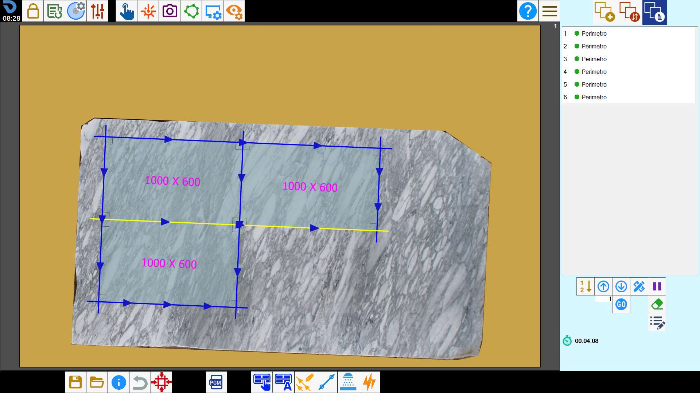

This function allows the operator to load a cutting project prepared in the office and adapt it to the actual position and dimensions of the slab on the machine.

Buttons
 | X-axis offset |
 | Y-axis offset |
 | Rotation |
 | Directional movement arrows |
 | Clockwise/anticlockwise rotation |
 | Reset positioning |
 | Automatic Slab Matching |
 | Show/Hide pieces |
Using Slab Matching
The operator can plan a slab cutting project in the office using a photo taken from the camera stand and save it.

After taking a photo of the slab on the worktable, the machine operator can load the project file saved in the office using the Slab Matching function.

The window that opens shows the photo taken of the worktable and a preview of the perimeter of the slab programmed in the office.
The elements visible on the screen represent:
Blue | Perimeter of the slab programmed in the office. |
Fuchsia | Perimeters of the pieces within the slab programmed in the office. |
Red | Original position of the slab programmed in the office. |
Green | Position of the slab on the worktable. |
The operator can move and/or rotate the perimeter to the correct position within the work area by dragging it, using the arrows or using the automatic alignment button.
Once the perimeter is positioned correctly, press Confirm. The pieces are then shown on the actual slab in the positions defined in the file.
